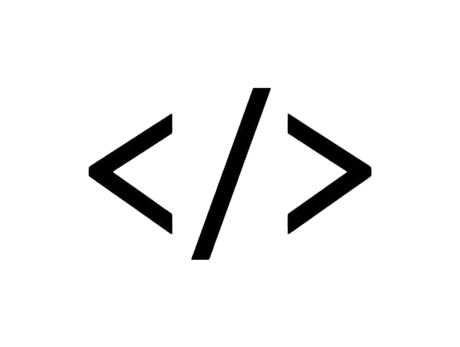
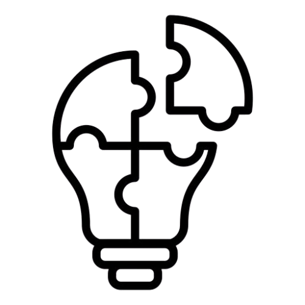
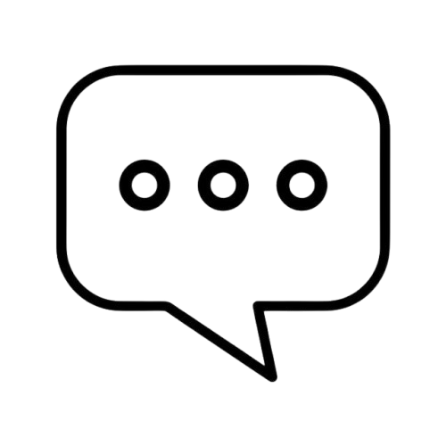
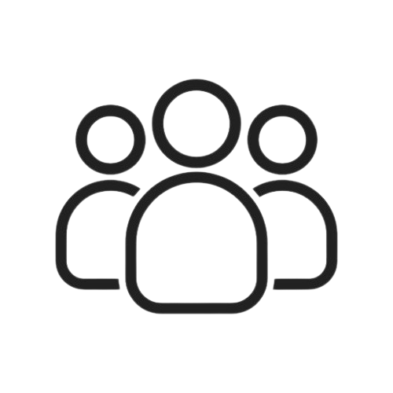

O projeto é resultado da união de habilidades em programação, design, comunicação e infraestrutura.




O Cronos nasceu com o propósito de oferecer um sistema de agendamento eficiente, moderno e acessível. Seu desenvolvimento foi construído com base na colaboração.